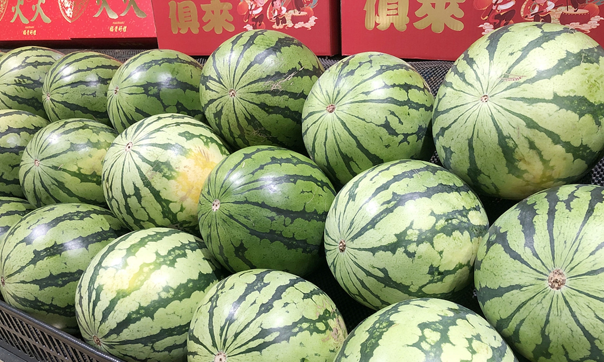

Watermelon (scientific name: Citrullus lanatus) is a large, juicy fruit that belongs to the gourd family (Cucurbitaceae), the same family as cucumbers and pumpkins. It is widely loved for its refreshing taste, especially in hot weather.
Watermelon is believed to have originated in Africa, and it grows best in warm climates like those found in many parts of Nigeria. The fruit develops on creeping vines and can grow quite large.
Watermelon is made up of about 90% water, making it excellent for hydration. It also contains:
There are different varieties, including:
Watermelon is usually eaten fresh. It can also be:
to know more about watermellon click visit more